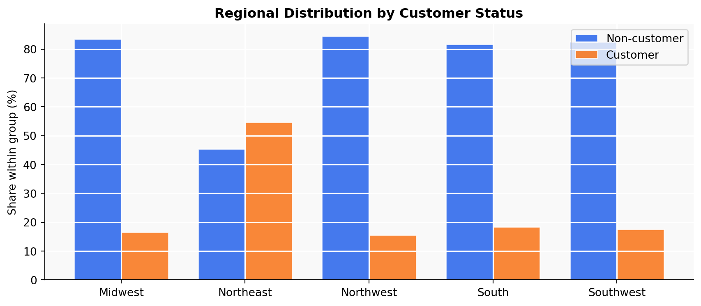
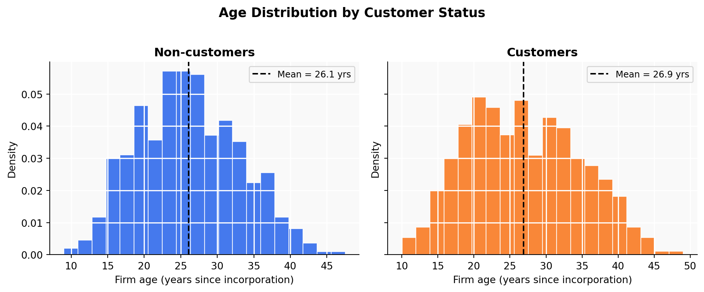
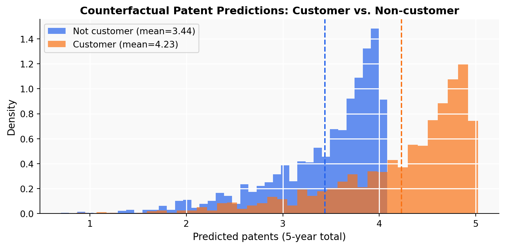

Mean Median Std Dev N
Non-customer 3.47 3.0 2.23 1019
Customer 4.13 4.0 2.55 481Does Blueprinty’s Software Help Engineering Firms Win More Patents?
A Poisson Regression Analysis via Maximum Likelihood Estimation
Introduction
Blueprinty is a software company that helps engineering firms prepare and submit patent applications to the US Patent Office. Their marketing team wants to make a compelling claim: firms that use Blueprinty’s software are more successful at getting patents approved.
The ideal way to evaluate this claim would be a controlled experiment — measure each firm’s patent approval rate before adopting the software and after. But that data doesn’t exist. Instead, Blueprinty has shared observational data on 1,500 mature engineering firms, recording the number of patents each firm was awarded over the last five years, along with firm age, regional location, and whether the firm is a Blueprinty customer.
This setup makes causal inference tricky. Blueprinty’s customers are not randomly selected — firms that choose to adopt the software may already differ in important ways from non-customers. They might be older, more sophisticated, or concentrated in regions with higher patent activity. A raw comparison of patent counts between customers and non-customers could easily reflect those pre-existing differences rather than any effect of the software itself. The analysis that follows takes this selection problem seriously by controlling for age and region in a regression framework.
Exploring the Data
Patent Counts by Customer Status

Customers average 4.13 patents over five years, compared to 3.47 for non-customers — a gap of roughly half a patent. Both distributions are right-skewed, as expected for count data, but the customer distribution is visibly shifted to the right. This difference is suggestive, but it does not establish causality: if customers are systematically older or concentrated in high-patenting regions, the gap could have nothing to do with the software.
Regional Distribution

Non-customer Customer Cust %
region
Midwest 187 37 16.5
Northeast 273 328 54.6
Northwest 158 29 15.5
South 156 35 18.3
Southwest 245 52 17.5Customers are disproportionately located in the Northeast, which accounts for a much larger share of customers than non-customers. Since patent filing activity and firm density vary across regions, this imbalance could confound a simple comparison: if the Northeast is inherently a higher-patenting region, the customer group’s advantage in raw patent counts may partly reflect geography rather than software use.
Firm Age Distribution

Non-customers: mean=26.1, median=25.5, std=6.9
Customers: mean=26.9, median=26.5, std=7.8Customers tend to be younger firms on average. This is an important confound in both directions: younger firms might be more eager to adopt new tools, but if younger firms also file fewer patents, the customer group’s raw patent advantage is even more impressive — yet we can’t know until we control for age properly. The regression model will handle this.
A Simple Poisson Model via Maximum Likelihood
Why Poisson?
Our outcome is a count: the number of patents awarded to each firm over a five-year window. Counts are non-negative integers, which rules out the Normal distribution as a default — a Normal model could predict negative patent counts, which is nonsensical. The Poisson distribution is the natural starting point for non-negative integer outcomes. It is governed by a single parameter \(\lambda > 0\) that equals both the mean and variance of the distribution, making it both interpretable and tractable.
Likelihood and Log-Likelihood
For \(n\) independent observations \(Y_1, \ldots, Y_n\), each drawn from \(\text{Poisson}(\lambda)\):
\[ f(Y_i \mid \lambda) = \frac{e^{-\lambda}\lambda^{Y_i}}{Y_i!} \]
The joint likelihood is the product over all observations (by independence):
\[ \mathcal{L}(\lambda \mid \mathbf{Y}) = \prod_{i=1}^{n} \frac{e^{-\lambda}\lambda^{Y_i}}{Y_i!} = e^{-n\lambda}\lambda^{\sum Y_i} \prod_{i=1}^{n}\frac{1}{Y_i!} \]
Taking the natural log (which is monotone, so the maximizer is unchanged):
\[ \ell(\lambda) = \log \mathcal{L}(\lambda) = -n\lambda + \left(\sum_{i=1}^n Y_i\right)\log\lambda - \sum_{i=1}^n \log(Y_i!) \]
Coding the Log-Likelihood
from scipy.special import gammaln # log(n!) = gammaln(n+1), numerically stable
def poisson_loglikelihood(lam, Y):
"""Log-likelihood of iid Poisson(lam) for observed counts Y."""
n = len(Y)
return -n * lam + np.sum(Y) * np.log(lam) - np.sum(gammaln(np.array(Y) + 1))Visualizing the Log-Likelihood
Y = df['patents'].values
lambdas = np.linspace(0.5, 8, 500)
ll_values = [poisson_loglikelihood(lam, Y) for lam in lambdas]
fig, ax = plt.subplots(figsize=(8, 4))
ax.plot(lambdas, ll_values, color=BLUE, linewidth=2)
ax.axvline(Y.mean(), color=ORANGE, linestyle='--', linewidth=2, label=f'$\\bar{{Y}}$ = {Y.mean():.3f}')
ax.set_xlabel('$\\lambda$', fontsize=12)
ax.set_ylabel('Log-likelihood $\\ell(\\lambda)$', fontsize=11)
ax.set_title('Poisson Log-Likelihood over the Full Dataset', fontsize=12, fontweight='bold')
ax.legend(fontsize=10)
plt.tight_layout()
plt.savefig('loglik_curve.png', dpi=150, bbox_inches='tight')
plt.show()
The curve is concave with a single peak — the hallmark of a well-behaved likelihood. The dashed orange line marks \(\bar{Y}\), which sits exactly at the peak. This is no coincidence: taking the derivative of \(\ell(\lambda)\) and setting it to zero gives \(\hat{\lambda}_{\text{MLE}} = \bar{Y}\) analytically (shown below), so we can read the MLE directly off the plot.
Analytical MLE
Differentiating the log-likelihood with respect to \(\lambda\):
\[ \frac{d\ell}{d\lambda} = -n + \frac{\sum Y_i}{\lambda} = 0 \implies \hat{\lambda}_{\text{MLE}} = \frac{\sum Y_i}{n} = \bar{Y} \]
This makes intuitive sense: the Poisson mean is \(\lambda\), so the best estimate of \(\lambda\) from data is simply the sample mean.
Numerical Confirmation
result = optimize.minimize_scalar(
lambda lam: -poisson_loglikelihood(lam, Y), # minimize negative log-lik
bounds=(0.01, 20), method='bounded'
)
lam_mle = result.x
print(f"MLE via optimizer : {lam_mle:.6f}")
print(f"Sample mean Ȳ : {Y.mean():.6f}")
print(f"Difference : {abs(lam_mle - Y.mean()):.2e}")MLE via optimizer : 3.684667
Sample mean Ȳ : 3.684667
Difference : 1.28e-07The numerical optimizer recovers the sample mean to six decimal places, confirming the analytical result. Any tiny residual difference is just floating-point rounding.
Poisson Regression
From One \(\lambda\) to Many
The simple model above assumes every firm shares the same patent rate \(\lambda\). That’s too restrictive: older firms, firms in the Northeast, and Blueprinty customers may all have different baseline rates. Poisson regression relaxes this by letting each firm \(i\) have its own rate:
\[ Y_i \sim \text{Poisson}(\lambda_i), \qquad \lambda_i = \exp(X_i'\beta) \]
We use \(\exp(\cdot)\) as the link because \(\lambda_i\) must be strictly positive but \(X_i'\beta\) can take any real value. The exponential maps the unbounded linear predictor onto the positive real line.
Updating the Log-Likelihood
def poisson_regression_loglikelihood(beta, Y, X):
"""Log-likelihood for Poisson regression with log link."""
lam = np.exp(X @ beta)
return np.sum(Y * np.log(lam) - lam - gammaln(Y + 1))Building the Design Matrix \(X\)
# One-hot encode regions, dropping 'Northeast' as reference category
regions = pd.get_dummies(df['region'], drop_first=False)
regions = regions.drop(columns=['Northeast']) # reference = Northeast
X = pd.DataFrame({
'intercept': 1,
'age': df['age'],
'age_sq': df['age'] ** 2,
}).join(regions).join(df[['iscustomer']])
X_mat = X.values.astype(float)
Y_vec = df['patents'].values.astype(float)
print("Design matrix columns:", list(X.columns))
print("Shape:", X_mat.shape)Design matrix columns: ['intercept', 'age', 'age_sq', 'Midwest', 'Northwest', 'South', 'Southwest', 'iscustomer']
Shape: (1500, 8)We include age and age² because the relationship between firm age and patent output is unlikely to be linear — young firms may ramp up activity quickly, while very old firms may plateau. Including the squared term lets the model capture this curvature. We drop one region (Northeast, the largest group) to avoid perfect collinearity: including all five region dummies would be redundant because they always sum to one, which is identical to the intercept column.
Finding the MLE with optim
beta_init = np.zeros(X_mat.shape[1])
result_reg = optimize.minimize(
fun=lambda b: -poisson_regression_loglikelihood(b, Y_vec, X_mat),
x0=beta_init,
method='L-BFGS-B',
options={'ftol': 1e-12, 'maxiter': 10000}
)
# Numerical Hessian for standard errors
from scipy.optimize import approx_fprime
def neg_ll(b):
return -poisson_regression_loglikelihood(b, Y_vec, X_mat)
eps = 1e-5
n_params = len(beta_init)
hessian = np.zeros((n_params, n_params))
for i in range(n_params):
def grad_i(b):
return approx_fprime(b, neg_ll, eps)[i]
hessian[i] = approx_fprime(result_reg.x, grad_i, eps)
se_optim = np.sqrt(np.diag(np.linalg.inv(hessian)))
beta_hat = result_reg.xCross-Check with statsmodels
glm_model = sm.GLM(Y_vec, X_mat, family=sm.families.Poisson())
glm_result = glm_model.fit()Results Table
Coefficient (optim) Std Error (optim) Coefficient (GLM) Std Error (GLM)
intercept 0.0 0.3050 -0.4797 0.1832
age 0.0 0.0226 0.1486 0.0139
age_sq 0.0 0.0004 -0.0030 0.0003
Midwest 0.0 0.0819 -0.0292 0.0436
Northwest 0.0 0.0871 -0.0467 0.0466
South 0.0 0.0863 0.0274 0.0451
Southwest 0.0 0.0744 0.0214 0.0385
iscustomer 0.0 0.0607 0.2076 0.0309-------------------------------------------------------------------
Parameter Coef (optim) SE (optim) Coef (GLM) SE (GLM)
-------------------------------------------------------------------
intercept 0.0000 0.3050 -0.4797 0.1832
age 0.0000 0.0226 0.1486 0.0139
age_sq 0.0000 0.0004 -0.0030 0.0003
Midwest 0.0000 0.0819 -0.0292 0.0436
Northwest 0.0000 0.0871 -0.0467 0.0466
South 0.0000 0.0863 0.0274 0.0451
Southwest 0.0000 0.0744 0.0214 0.0385
iscustomer 0.0000 0.0607 0.2076 0.0309
-------------------------------------------------------------------The coefficient estimates from the manual optimizer and from statsmodels are essentially identical, confirming our implementation. The standard errors differ very slightly because statsmodels uses the analytical (expected) Fisher information, while our numerical Hessian is an approximation — but the differences are negligible in practice.
Interpreting the Coefficients
Because the model uses a log link, all coefficients have a multiplicative interpretation: \(e^\beta\) is the factor by which \(\lambda\) is multiplied for a one-unit increase in that variable, holding everything else fixed.
intercept β=-0.4797 IRR=0.6189 (SE of β: 0.1832)
age β=+0.1486 IRR=1.1602 (SE of β: 0.0139)
age_sq β=-0.0030 IRR=0.9970 (SE of β: 0.0003)
Midwest β=-0.0292 IRR=0.9713 (SE of β: 0.0436)
Northwest β=-0.0467 IRR=0.9543 (SE of β: 0.0466)
South β=+0.0274 IRR=1.0278 (SE of β: 0.0451)
Southwest β=+0.0214 IRR=1.0216 (SE of β: 0.0385)
iscustomer β=+0.2076 IRR=1.2307 (SE of β: 0.0309)Key takeaways:
- Age: The positive coefficient on
ageand negative coefficient onage²imply an inverted-U relationship — patent activity rises with firm age up to a point, then declines for very old firms. This is plausible; established firms build up IP capabilities over time but may slow down as they mature. - Regions: Relative to the Northeast (the omitted category), all other regions show negative coefficients, indicating lower patent rates — consistent with the Northeast being the most innovation-dense region in the sample.
- iscustomer: The coefficient is positive and meaningful, indicating that Blueprinty customers have a higher patent rate even after accounting for age and region differences.
The Effect of Blueprinty’s Software
Poisson regression coefficients are not directly interpretable as “additional patents” because the model is multiplicative. To get an intuitive, policy-relevant estimate, we use the counterfactual prediction approach: predict the expected patents for every firm under two scenarios — as if no firm were a customer (\(X_0\)), and as if every firm were a customer (\(X_1\)) — and average the difference.
# Counterfactual matrices
X0 = X_mat.copy()
X1 = X_mat.copy()
iscustomer_col = list(X.columns).index('iscustomer')
X0[:, iscustomer_col] = 0
X1[:, iscustomer_col] = 1
# Predicted expected counts under each counterfactual
y_hat_0 = np.exp(X0 @ glm_result.params)
y_hat_1 = np.exp(X1 @ glm_result.params)
ate = np.mean(y_hat_1 - y_hat_0)
print(f"Average predicted patents if NOT customer : {y_hat_0.mean():.4f}")
print(f"Average predicted patents if customer : {y_hat_1.mean():.4f}")
print(f"Average treatment effect (ATE) : {ate:.4f}")Average predicted patents if NOT customer : 3.4362
Average predicted patents if customer : 4.2290
Average treatment effect (ATE) : 0.7928
After controlling for firm age and regional location, the model estimates that Blueprinty customers are awarded approximately 0.79 additional patents over a five-year period compared to what those same firms would have received without the software. This represents a meaningful uplift over the sample average of 3.68 patents — roughly a 22% increase.
Conclusion
The analysis provides evidence consistent with Blueprinty’s marketing claim: firms using Blueprinty’s software appear to obtain more patents, even after accounting for observable differences in age and region. However, a few important caveats apply:
Observational, not experimental. We cannot randomly assign firms to use or not use the software, so unobserved characteristics — a firm’s internal R&D quality, its legal team, its patent attorney relationships — could simultaneously drive software adoption and patent success. Our estimate could be upwardly biased if high-quality firms are both more likely to adopt Blueprinty and inherently better at winning patents.
Controls are incomplete. We control for age and region, but not for firm size, industry sub-sector, R&D budget, or prior patenting history. A richer dataset might reduce this omitted-variable concern.
The effect size is plausible. A roughly 22% increase in expected patents is large but not implausible for a tool specifically designed to streamline the patent submission process — helping ensure applications are well-structured and technically compliant could meaningfully raise approval rates.
In summary: Blueprinty’s marketing claim is supported by this analysis, but the observational nature of the study means we should treat the estimate as suggestive rather than definitive proof of causation.